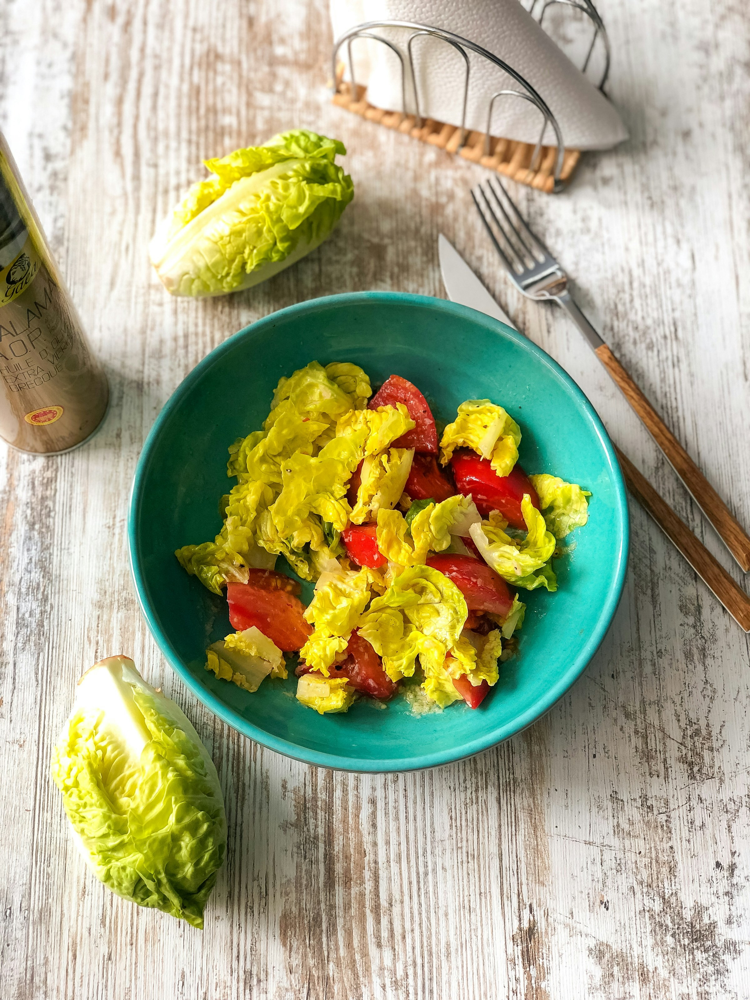

Simple Salad

Description
According to the Cambridge Dictionary a salad is:
"A mixture of uncooked vegetables, usually including lettuce, eaten either as a separate dish or with other food"
Ok so the picture may be a bit of an oversimplification of this recipe, but really not by much. This recipe is also from my student days and was an occasional 'light meal' used to break up the copious helpings of spaghetti bolognese.
Ingredients
- Store-bought pre-mixed salad bowl
- Optionally (and much more cheaply) buy the ingredients you see in said salad bowl and chop them up yourself for massive savings
- Pre-cooked protein of choice
- Chicken
- Turkey (my favourite)
- Ham
- etc
Steps
- Add the salad into a bowl and cover with any included dressing
- Cut/tear up the protein of choice and either sprinkle over the salad or mix in
- Enjoy!